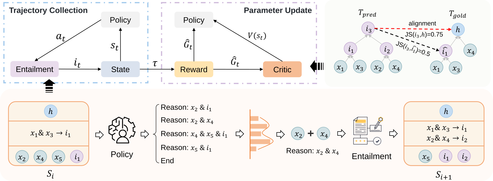
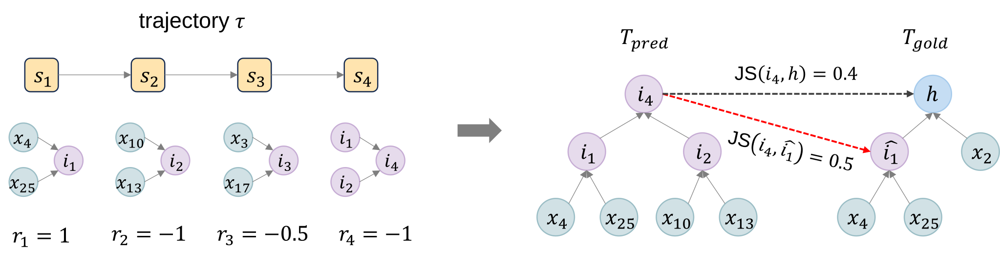
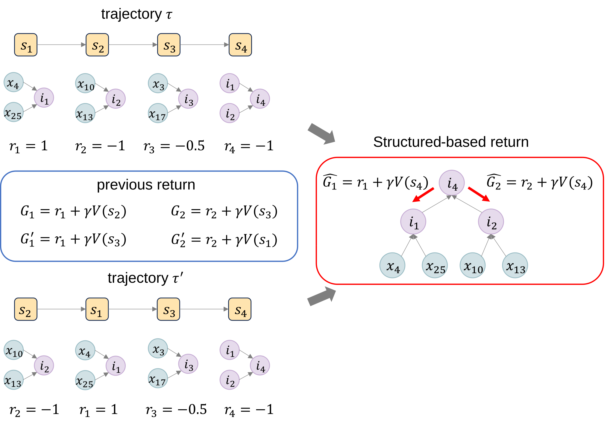

Elucidating the reasoning process with structured explanations from question to answer is fundamentally crucial, as it significantly enhances the interpretability and trustworthiness of question-answering (QA) systems. However, structured explanations demand models to perform intricate structured reasoning, which poses great challenges. Most existing methods focus on single-step reasoning through supervised learning, ignoring logical dependencies between steps. Meanwhile, existing reinforcement learning (RL)-based methods overlook the structured relationships, impeding RL's potential in structured reasoning. In this paper, we propose SEER, a novel method that maximizes a structure-based return to facilitate structured reasoning and explanation. Our proposed structure-based return precisely describes the hierarchical and branching structure inherent in structured reasoning, effectively capturing the intricate relationships between states. We also introduce a fine-grained reward function to meticulously delineate diverse reasoning steps. Extensive experiments show that SEER significantly outperforms state-of-the-art methods, achieving an absolute improvement of 6.9% over RL-based methods on EntailmentBank, a 4.4% average improvement on STREET benchmark, and exhibiting outstanding efficiency and cross-dataset generalization performance.

The overall framework of SEER, which mainly includes trajectory collection and parameter updates. For trajectory collection, we delineate the state update process into two steps: action generation (based on Policy) and conclusion reasoning (based on Entailment). For parameter updates, the trajectories are converted to \(T_{\text{pred}}\) and aligned with intermediate nodes in \(T_{\text{gold}}\) based on maximum Jaccard similarity.

An illustration of the reward and alignment process of SEER. Each reasoning step is actually a subtree (the same in the reasoning graphs). Step (1) We construct \(T_{\text{pred}}\) using the last intermediate conclusion (\(i_4\) in this example) as the hypothesis. Step (2) We calculate the Jaccard similarity between the intermediate node (\(i_*\)) in \(T_{\text{pred}}\) and each golden intermediate node in \(T_{\text{gold}}\) (\(\hat{i}_1\) and \(h\) in this example), and align with the maximum Jaccard similarity. In this example, \(i_1\) is aligned with \(\hat{i}_1\) due to \(\text{JS}(i_1, \hat{i}_1) = 1\). \(i_2\) is aligned with "NULL". \(i_4\) is aligned with \(\hat{i}_1\) due to \(\text{JS}(i_4, \hat{i}_1)=0.5\) and \(\text{JS}(i_4, h)=0.4\). Step (3) We assign rewards based on the alignment results. Note that \(i_3\) (\(s_3\)) is a redundant step. \(r_{1}=1\), \(r_{2}=-1\), \(r_{3}=-0.5\), and \(r_{4}=-1\). Evidently, the reward for each state originates from the tree structure rather than chained trajectory. Therefore, the return of each state should also follow the tree structure (or graph structure in reasoning graphs) rather than chained trajectory.

An illustration of the equivalent trajectory and the definition of return. As the reasoning steps of \(s_1\), \(s_2\), and \(s_3\) are mutually independent, the execution order among these steps can be arbitrary. Thus, \(\tau\) and \(\tau^{\prime}\) are equivalent trajectories because they can be converted to the same entailment tree. As shown in blue box, previous work, such as RLET, defines the return (a.k.a expected cumulative reward) in a chained trajectory and would assign different returns to \(s_1\) and \(s_2\) in these equivalent trajectories. In contrast, as shown in red box, our structure-based return is defined based on the tree or graph structure inherent in structured reasoning, which is the same source of rewards. Our structure-based return will consistently allocate stable returns to equivalent trajectories, thereby promoting training stability and convergence. Furthermore, maintaining consistency between the sources of rewards and returns can significantly enhance the effectiveness of the policy.
BibTex Code Here